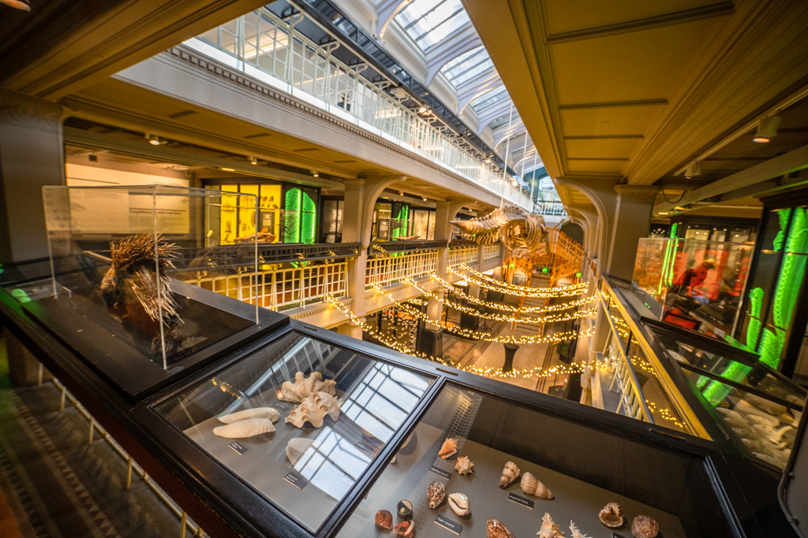
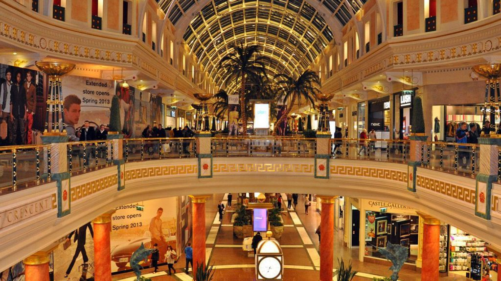
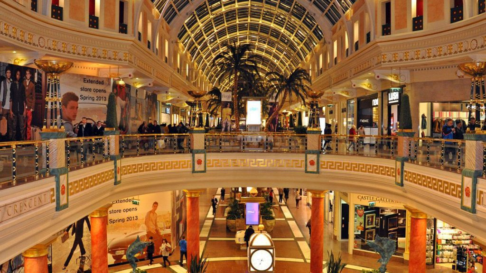
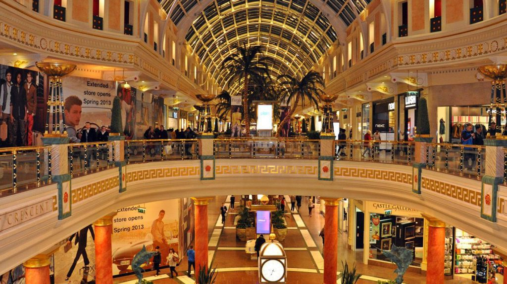
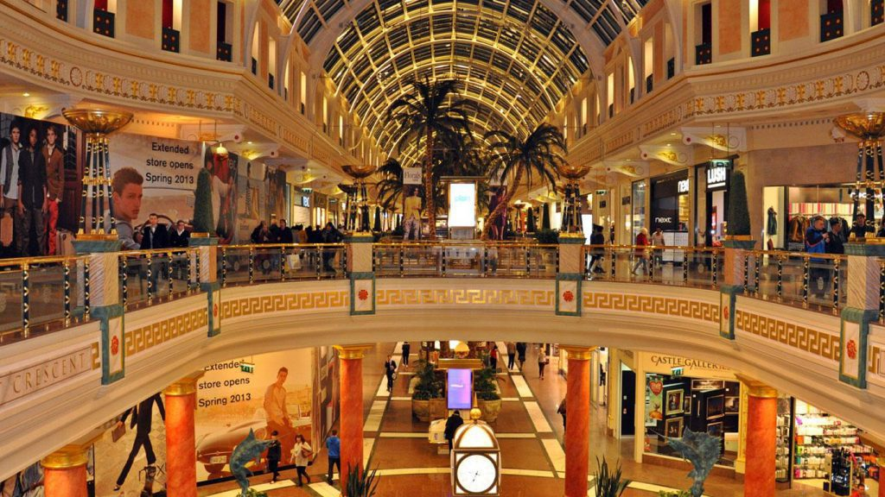

Tourist Attractions
 



The Trafford Centre, located in Greater Manchester, serves as a captivati ng tourist destination for various reasons. With its remarkable architectural design, this immense shopping center effortlessly combines retail therapy with aesthetic beauty. Its vast size and wide range of retail options establish it as one of Europe's largest shopping centers , attracting visitors from near and far. Featuring over 200 stores, including high-end fashion and unique boutiques, the center caters to a diverse range of tastes and preferences. In addition to shopping, the Trafford Centre transforms into a cultural hub with its diverse entertainment options, such as a spacious food court, cinema complex, and leisure activities. The iconic dome, reminiscent of historical structures, adds an extra layer of allure. Furthermore, the Trafford Centre goes beyond traditional shopping experiences by incorporating themed zones like the luxurious Orient and the enchanting Peel Dome, creating an immersive and visually captivating environment. Its convenient accessibility and strategic location further enhance its appeal, making it a convenient stop for tourists exploring Manchester and its surrounding areas. In summary, the Trafford Centre not only offers a haven for shopping but also a multifaceted destination that seamlessly combines retail therapy, entertainment, and architectural splendor. It is a must-visit attraction for tourists seeking a diverse and enriching experience.
The Manchester Art Gallery is a captivating tourist destination that seamlessly combines historical significance with contemporary allure. Located in the bustling heart of the city, this cultural gem entices visitors with its stunning architecture, blending Victorian grandeur and modern design. In addition to its architectural marvel, the gallery boasts a diverse collection spanning centuries, showcasing masterpieces from renowned artists and offering a captivating journey through the evolution of art. What distinguishes this gallery is its commitment to providing an immersive experience. Through interactive displays and thoughtfully curated exhibitions, visitors of all ages are engaged, creating a dynamic space that fosters a deeper connection with the art world. The Manchester Art Gallery goes even further by ensuring accessibility for a diverse audience, making the wonders of art open and inviting. Situated at the crossroads of Manchester's vibrant cultural landscape, the gallery becomes a hub for exploration. Its central location invites tourists to immerse themselves in the city's artistic spirit, providing a gateway to a multitude of cultural offerings. Whether you are a seasoned art enthusiast or a casual observer, the Manchester Art Gallery stands as a testament to the city's commitment to artistic expression, making it an essential stop for those seeking a multifaceted and enriching cultural experience.
The Manchester Museum is a captivating tourist attraction that seamlessly combines history, culture, and education to provide a rich and immersive experience. Located in the heart of Manchester, this institution houses a vast collection that spans thousands of years, showcasing artifacts from ancient civilizations to contemporary artworks. The museum's wide range of exhibits caters to various interests, including archaeology, anthropology, natural history, and fine arts. Visitors are particularly drawn to the Egyptian mummies, awe-inspiring dinosaur skeletons, and carefully curated galleries that showcase the region's industrial heritage. What distinguishes the Manchester Museum is its dedication to interactive learning, offering engaging displays, workshops, and events that captivate audiences of all ages. The museum's focus on inclusivity and community involvement creates a welcoming atmosphere, encouraging visitors to explore, question, and appreciate the marvels of the world. Additionally, its strategic location in Manchester ensures easy accessibility, making it an ideal destination for tourists seeking a comprehensive and enriching cultural experience. Whether you are a history enthusiast, an art lover, or a family looking for an educational outing, the Manchester Museum guarantees an unforgettable journey through time and the diverse achievements of humanity.